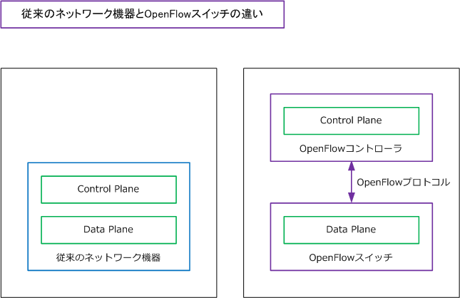
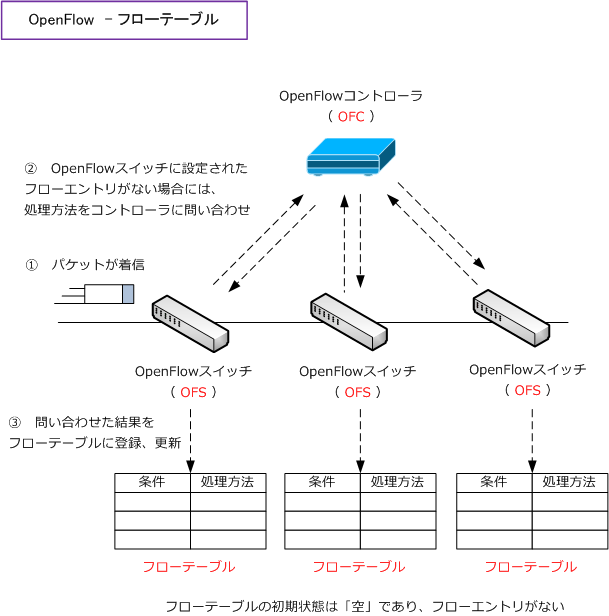
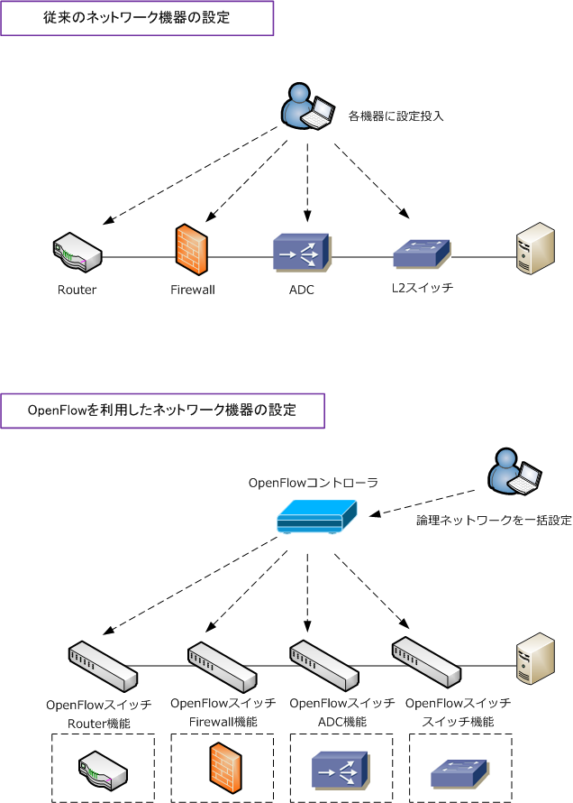
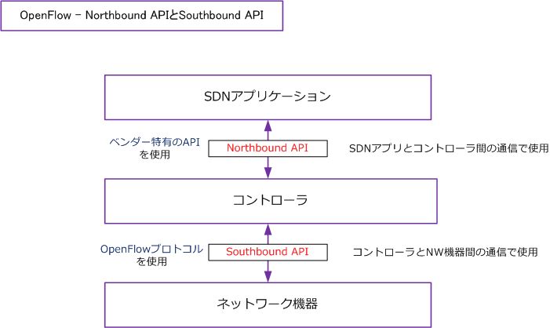

OpenFlow
OpenFlowとは
OpenFlowとは、SDNを実現する技術の1つであり、ネットワーク機器を1つの制御装置で集中管理して 複雑な転送制御を行ったり、柔軟にネットワーク構成を変更できる技術のことです。このOpenFlowは、 GoogleやFacebookなどが参加している団体であるONF（Open Networking Foundation）が標準化を 進めています。
OpenFlowでは、従来のネットワーク機器では内部にある「経路制御の機能」と「データ転送の機能」を 分離させています。OpenFlowは「OpenFlowコントローラ」と「OpenFlowスイッチ」で構成されます。 ※ 経路制御の機能はコントロールプレーンで担い、データ転送の機能はデータプレーンで担っています。

OpenFlowコントローラでは、複数のOpenFlowスイッチの動作を一括して管理できます。ネットワーク 管理者は各OpenFlowスイッチの動作を記述したフローテーブルを作成して、OpenFlowコントローラは フローテーブルをOpenFlowプロトコルによって配送します。各OpenFlowスイッチはフローテーブルに 基づいてデータの転送、破棄、あて先の書き換えなどを実行します。フローレベルに記述できる情報には、 OpenFlowスイッチの物理ポート番号、送信元・宛先MACアドレス、VLAN ID、MPLSラベル、送信元・ 宛先IPアドレス、TCP/UDPポート番号等があり、これらのレイヤを組み合わせた条件の記述も可能です。

OpenFlow Controllerは略して「OFC」、OpenFlow Switchは略して「OFS」と表記されることがあります。
OpenFlowによるネットワーク機器の設定
OpenFlowコントローラはコントロールプレーンでOpenFlowスイッチを制御します。OpenFlowスイッチは ただのL2スイッチではなく、OpenFlowはプログラマブルであることから、Firewallやロードバランサなどの アプライアンスで実現していた機能をOpenFlowスイッチ上に実装することもできます。

OpenFlow - Southbound API・Northbound API
SDNアーキテクチャ図の解説通り、OpenFlowコントローラとネットワーク機器間の Southbound API で OpenFlowプロトコルが使用されます。Northbound API では、OpenFlowコントローラとネットワークの 管理・制御を実現するためのSDNアプリ間でやりとりする仕組みを提供しています。

OpenFlow導入における課題点とNFV・SFCの併用
OpenFlow導入における課題として、OpenFlowのネットワークインフラを導入するためには構成する全ての ネットワーク機器を比較的コストの高いOpenFlow対応機器にリプレースまたは新規導入する必要があります。 また、複雑なネットワーク制御をするためには複雑なフロールールが必要となり、パケットを処理するために 機器のフローテーブルをルックアップする際に、機種によりはある程度の負荷がかかってしまう点があります。
ただし、OpenFlowスイッチに全てのNW機器の機能を実装させるのではなく、サーバ仮想化技術を上手く活用 して、VMを必要に応じて機動してVM上にスイッチ、ルータ、Firewall、ADCなどの機能を動作させて、その 機器間をどのようにパケット転送するべきなのかを、OpenFlowやオーバレイなどのSDN技術を用いて制御する ことで負荷を軽減させることができます。この考え方は、NFV（Network Function Virtualization）そして、 SFC（Service Function Chaining）と呼ばれる考え方です。
OpenFlowコントローラとOpenFlowスイッチがやり取りするメッセージ
・ OpenFlowコントローラ側からの送信メッセージ
| メッセージ | 説明 |
|---|---|
| Packet Out（Packet-Out） | コントローラからスイッチへパケットを送り、指定したアクションで出力させるメッセージ |
| Flow Mod（Flow-Mod） | コントローラからスイッチへフローエントリの追加・変更・削除を指示するメッセージ |
| Port Mod | ポートの状態を変更するためのメッセージ |
| Set Config | OpenFlowスイッチのコンフィグパラメータを設定するためのメッセージ |
・ OpenFlowコントローラ側から要求が送信され、OpenFlowスイッチ側で応答するメッセージ
| メッセージ | 説明 |
|---|---|
| Features Request/Reply | OpenFlowスイッチのケイパビリティ取得に用いられるメッセージ |
| Stats Request/Reply | 統計情報取得に用いられるメッセージ |
| Get Config Request/Reply | OpenFlowスイッチのコンフィグパラメータの取得に用いられるメッセージ |
| Barrier Request/Reply | OpenFlowコントローラ側の要求に対する処理完了の確認に用いられるメッセージ |
| Queue Get Config Request/Reply | キューに関するコンフィグ取得に用いられるメッセージ |
・ OpenFlowスイッチ側からの送信メッセージ
| メッセージ | 説明 |
|---|---|
| Packet In（Packet-In） | スイッチが受信パケットをコントローラへ通知するメッセージ |
| Flow Removed | OpenFlowスイッチ中のフローが消えたことを通知するためのメッセージ |
| Port Status | OpenFlowスイッチからポート状態変化を通知するためのメッセージ |
・ OpenFlowコントローラ、OpenFlowスイッチ双方からの送信メッセージ
| メッセージ | 説明 |
|---|---|
| Hello | OpenFlowコントローラ、OpenFlowスイッチ間接続の開始時に用いられるメッセージ |
| Echo Request/Reply | OpenFlowコントローラ、OpenFlowスイッチ間接続の死活監視に用いられるメッセージ |
| Error | エラーを通知するためのメッセージ |
| Vendor | ベンダー独自定義のためのメッセージ |